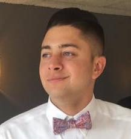

About Me
My name is Michael Passow, and currently live in Atlanta, Georgia. I am 25 years old and a current student in Georgia Tech's Proffesional Education Web Development program. I started coding after I seperated from the U.S. Coast Guard on October 15, 2018. Coding has become my passion as I have learned to enjoy the small victories of "cracking the code" and creating games, websites, and applications with different design elements.
Growing up I always enjoyed gaming with my brother, which ultimately led me to this field. I wanted to understand how all of these games, apps, and websites were created so that maybe one day I would get the oppurtunity to be able to play an important role in the creation or design of "the next big internet thing".
I want to learn, teach, and work with people from all around the world.
Connect With Me